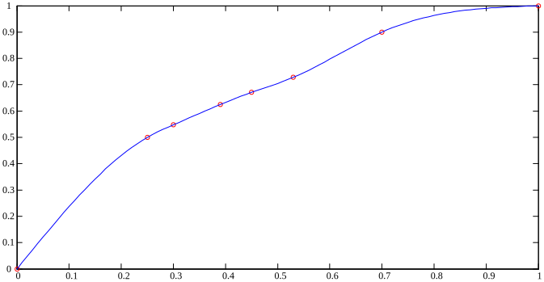

曲线差值
创建于2021-3-30
该项目完成于2014-5
该项目完成于2014-5
实际应用中，常需要使用一些曲线，如VF控制中需要提供VF曲线，三角函数运算中正弦、反正弦等函数曲线，这些可以用解析式进行描述，但是解析式中可能会用到平方根、三角函数、指数函数等运算，这就会增大控制器的运算量，如果该运算需要执行的次数很多，会对系统产生很大负担，甚至可能会导致系统无法正常工作。
为了解决上面的问题，经常避免使用解析式来描述曲线，而是取几个曲线上的关键点，通过插值的方式，用简单的方程对曲线分段进行表示。插值函数常选用一次多项式、二次多项式或三次多项式的形式，这样只使用加法和乘法可以实现对复杂曲线的描述，大大降低运算量。
线性插值比较简单，二次和三次插值相对复杂，因此特开发了二次和三次样条插值算法。下图中，红色圆圈为已知的数据点，蓝色线为使用三次样条插值得到的曲线。该算法目前已在多个项目中得到应用。
